Initial Router Configuration Lab 10/15/2023
By Nathan Fitzsimmons nathanfitzsimmons2010.github.io
In this Cisco Packet Tracer lab we will configure two 2911 routers:
- Install Small Form-Factor Pluggable(SFP) Gigabit Ethernet ports.
- Configure Hostnames.
- Connect the routers with a fiber connection.
- Plan the network and subnet.
- Configure interfaces with IP addresses.
- Write configuration to file.
Install Small Form-Factor Pluggable(SFP) Gigabit Ethernet ports:
- Click and drag a 2911 Router onto the canvas.
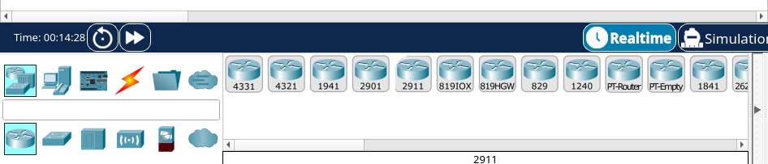
- Left click to bring up the Physical tab interface of the router. Here we can add or remove modules and physically turn the router on and off.
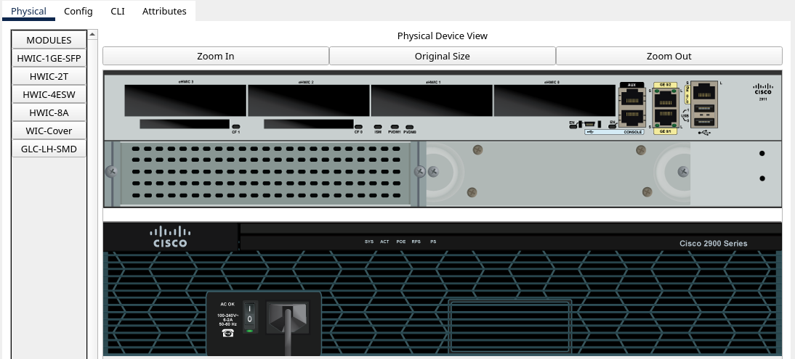
- Use the Zoom In button for a larger view of the physical router.
- Find and turn off the power button. The power needs to be turned off before we add or remove any modules to the router.
- Click each tab underneath the MODULES tab and read their descriptions at the bottom of the window.
- We can drag and drop modules from the list on the left to the router’s slots on the right.
- Choose to add the HWIC-1GE-SFP to a vacant eHWIC slot.
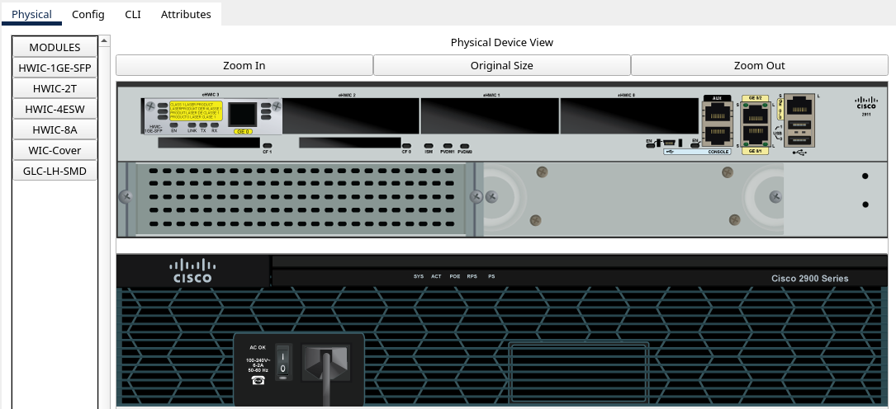
HWIC-1GE-SFP’s description reads: a single-wide HWIC with one Small Form-Factor Pluggable (SFP) slot. The SFP slot can be populated with Cisco copper and optical Gigabit Ethernet SFPs to provide 1-port Gigabit Ethernet connectivity on all Cisco Integrated Services Routers.
- Choose the GLC-LH-SMD tab and drag and drop the SFP ports into the module that was just placed.
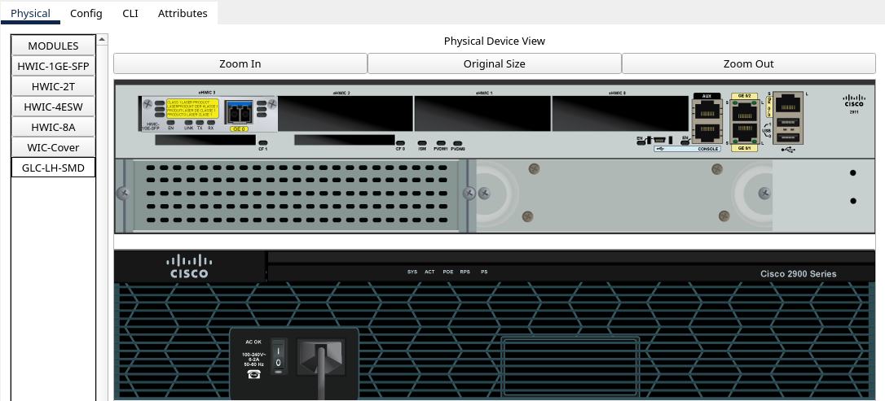
1000BASE-LX/LH SFP’s description reads: operates in Gigabit Ethernet ports of Cisco Industrial Ethernet and SmartGrid switches and routers.
- Place WIC-Covers over the vacant slots.
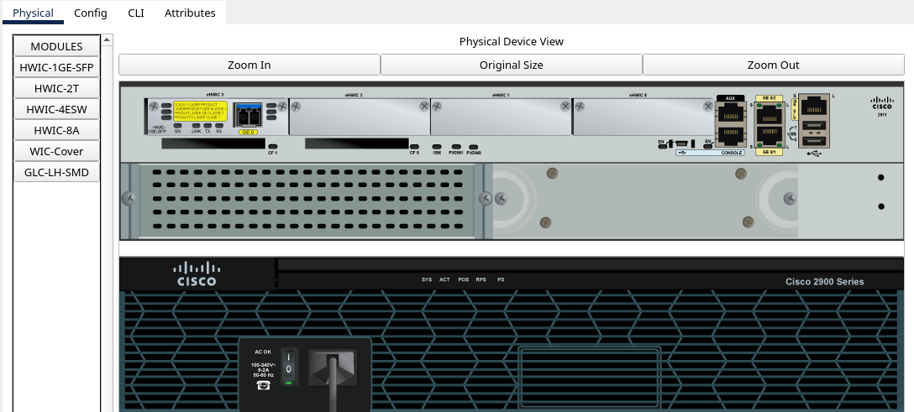
The WIC cover plate description reads: provides protection for the internal electronic components. It also helps maintain adequate cooling by normalizing airflow.
- Turn the router’s power back on.
- Repeat steps 1-6 for another 2911 router.
Configure Hostnames:
- Change the name of the Router on the topology by clicking the text underneath the router icon.
- Now enter the CLI by left clicking the router’s icon and selecting the CLI tab.
- This being the first time we entered the CLI, the router will ask if we want to enter the initial configuration wizard. Respond with no.
- “Press RETURN to get started!”
- Enter “enable” to enter privileged exec mode.
- Enter “configure terminal” to enter global configuration mode.
- Enter the command “hostname” followed by the desired name you want to go with. I chose Pittsburgh.
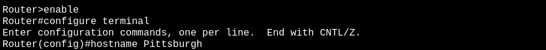
- Write the running-config to start-up config to save the changes. There are various ways to do this. Here I used the “do write” command from the global configuration mode.
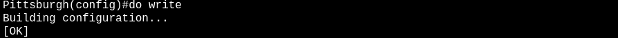
- Repeat 8-14 for the other router.
Connect the routers with a fiber connection:
- Go to the connections tab at the bottom of the Packet Tracer Window and choose the Fiber Connection.
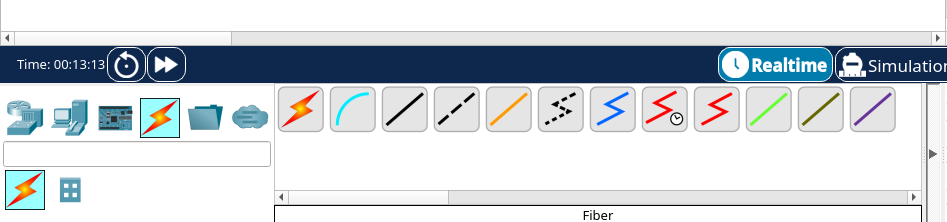
- Control + Left Click the router and choose the GigabitEthernet0/3/0 connection.
- Repeat for the second router.
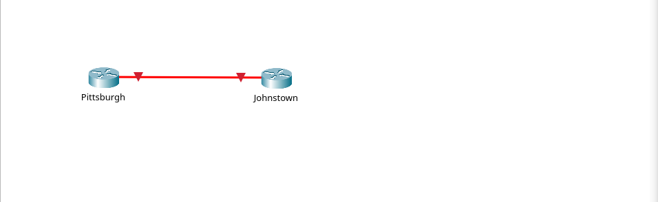
Plan the network and subnet:
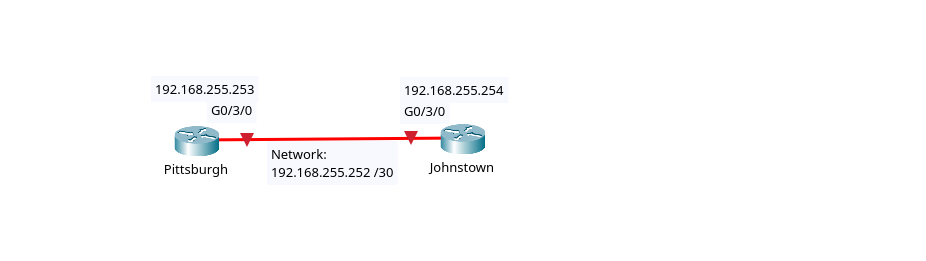
- Designate and note what IP addresses you want to use on the topology.
- You can do this by clicking the “note” icon in the taskbar or left clicking the canvas and hitting “n” on your keyboard.
I chose to use the 192.168.255.252 network. It will be a /30 mask or a subnet mask of 255.255.255.252. This serves the purpose of not wasting any private IP addresses by only having a network address, broadcast address and two IP addresses for our two router interfaces. That is all that is needed for this network.
Here are all the IP addresses for this network:
Network Address: 192.168.255.252
Pittsburgh G0/3/0: 192.168.255.253
Johnstown G0/3/0: 192.168.255.254
Broadcast Address: 192.168.255.255
Configure interfaces with IP addresses:
- Left click the icon of the router that you want to configure. Click the CLI tab. Press RETURN to get started.
- Enter the following commands:
- enable
- configure terminal
- interface [INTERFACE]
- ip address [IP ADDRESS] [SUBNET MASK]
- no shutdown
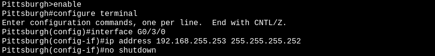
- Repeat steps 23-24 for the other router.
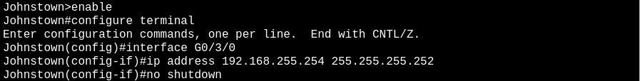
- Enter the “end” command to drop down to privileged exec mode and ping the opposite router to check connectivity.
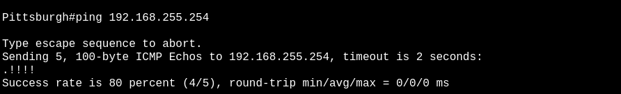
- Check the arp table to see the added IP addresses and compare them to the topology.

Write configuration to file:
- Save configurations on both routers.
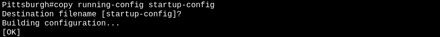
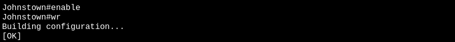